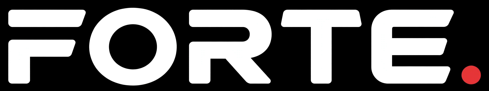
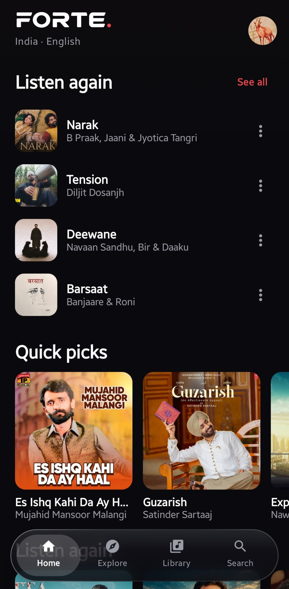
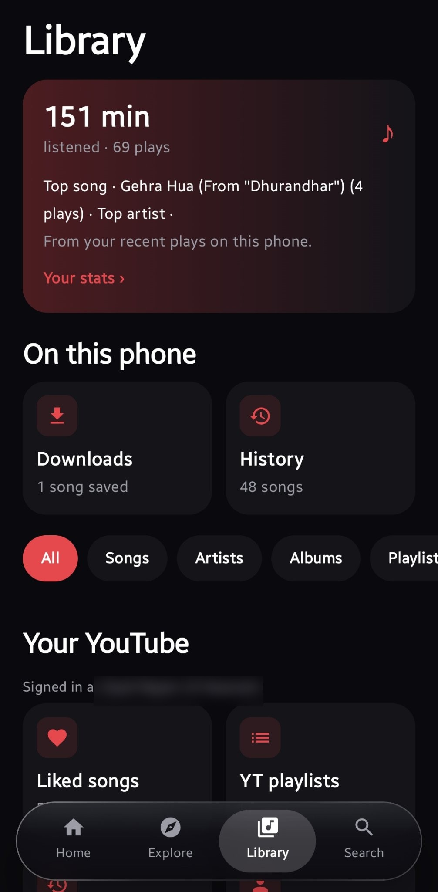
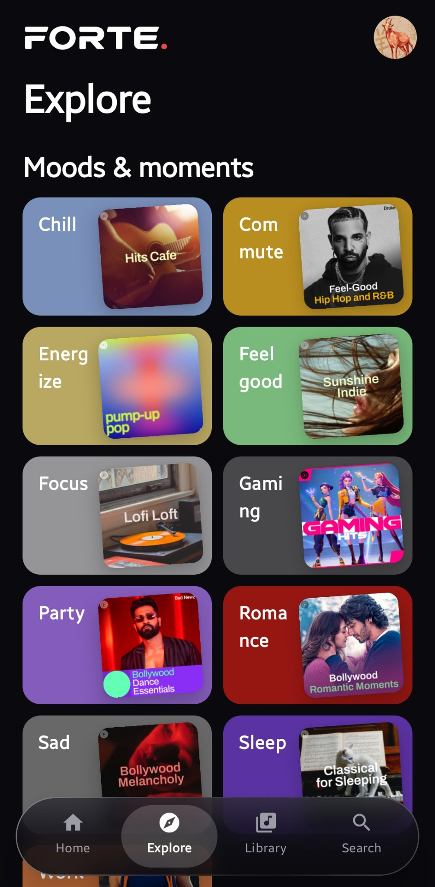
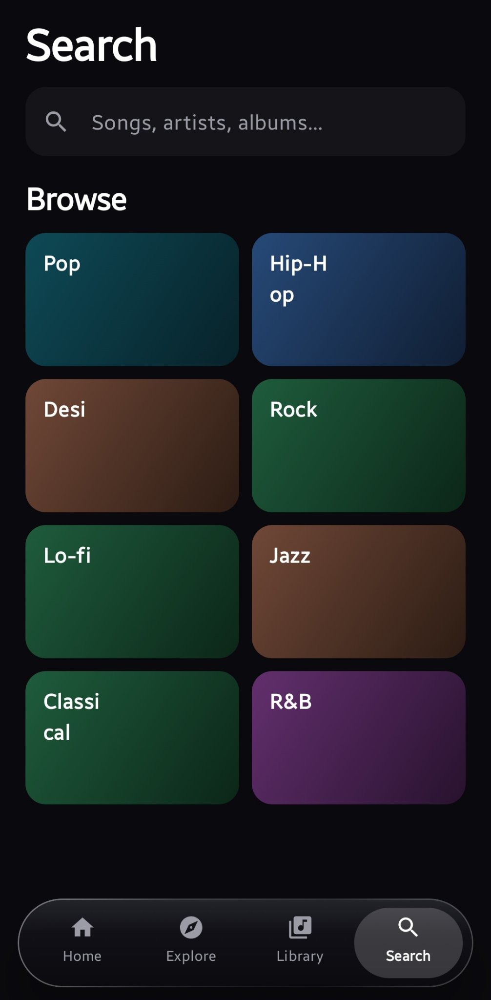
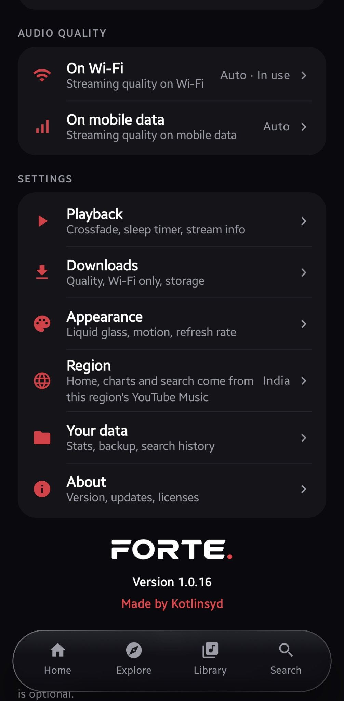

Music, kept simple.
Forte plays songs, albums and playlists from YouTube Music in a clean, dark player — no ads in the way, and your library stays on your phone.
Version 1.0.22·Android 8.0 or newer·Free





Everything a music app should do, nothing in the way.
Listen again, quick picks, charts and new releases — shelves keep loading as you scroll.
Moods, moments and genres as picture cards. Pick a feeling and press play.
Songs, albums, playlists and artists, all in one search.
Optional sign-in brings your likes, playlists, subscriptions and history with you. Or don't — Forte works fully without it.
Favourites, playlists, history and downloads live on the device, kept apart from the account.
Save songs inside the Library and play them offline, anywhere.
Background play keeps going when you leave the app, with notification and lock-screen controls.
Lyrics, song credits, radio, a queue, sleep timer, playback speed and an audio output picker.
Pick them yourself — they are used across Home, Explore and charts.
Forte checks for new versions and installs them in place. No store needed.
Free. No account needed. Your music stays yours.
Android 8.0 or newer